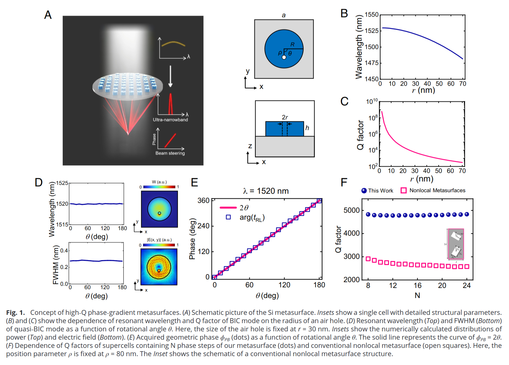
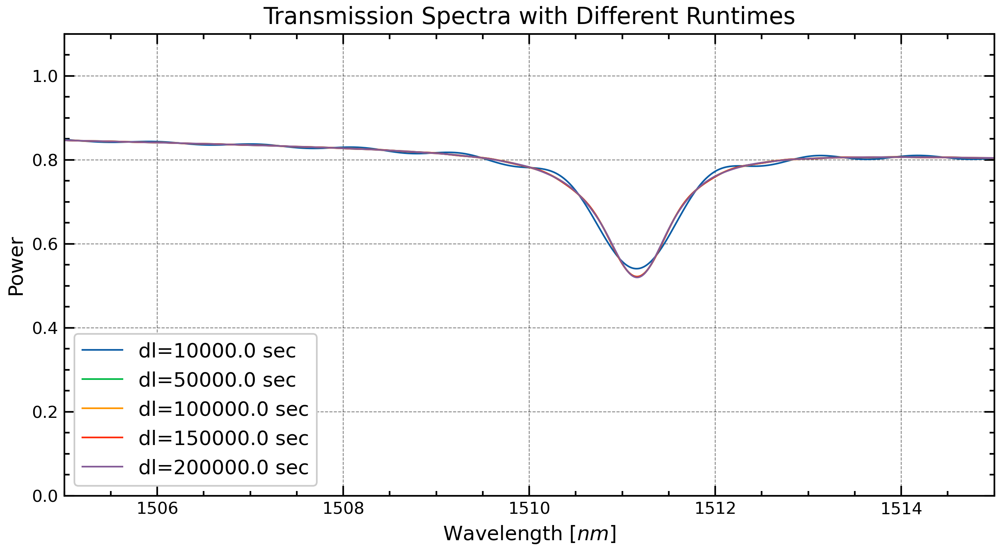

# Import the necessary packages
import matplotlib.pyplot as plt
import numpy as np
import tidy3d as td
import tidy3d.web as web
from tidy3d import material_library
import scienceplots
td.config.logging_level = "ERROR"Ultra narrowband Metasurface
Yankun (Alex) Meng
In this simulation of Paper Link, I did 1200-1600nm parameter sweep, and linear polarization. Finding the transmittance of this structure.




Preconditions
# 0 Define a FreqRange object with desired wavelengths
fr = td.FreqRange.from_wvl_interval(wvl_min=1.2, wvl_max=1.6)
N = 501 # num_points
fwidth = fr.fmax - fr.fmin
freq0 = fr.freq0
lda0 = td.C_0 / fr.freq0# 1 Computational Domain Size
h = 0.210 # Height of cylinder
spc = 8
sh = 3 # height of the SiO2
Lz = spc + h + spc + h
Px = Py = P = 0.750 # periodicity
sim_size = [Px, Py, Lz]# 2 Grid Resolution
dl = P / 32
horizontal_grid = td.UniformGrid(dl=dl)
vertical_grid = td.AutoGrid(min_steps_per_wvl=32)
grid_spec=td.GridSpec(
grid_x=horizontal_grid,
grid_y=horizontal_grid,
grid_z=vertical_grid,
)# 3 Structures and Materials
R = 0.235 # radius of the cylinder
r = 0.030 # radius of the inner hole
p = 0.080 # distance between hole to center of circle
theta = np.deg2rad(90) # angle between x-axis and p vector
Si = material_library['cSi']['Green2008']
SiO2 = material_library['SiO2']['Horiba']
outer_cylinder = td.Cylinder(
center=[0, 0, h / 2],
radius=R,
length=h,
axis=2
)
inner_cylinder = td.Cylinder(
center=[p*np.cos(theta), -p*np.sin(theta), h / 2],
radius=r,
length=h,
axis=2
)
cylinder = td.ClipOperation(
operation="difference",
geometry_a=outer_cylinder,
geometry_b=inner_cylinder
)
atom = td.Structure(
geometry=cylinder,
medium=Si,
name="metaatom"
)
dioxide = td.Structure(
geometry=td.Box(
center=[0,0,-sh/2],
size=(td.inf,td.inf, sh)
),
medium=SiO2,
name="silicon dioxide"
)
substrate = td.Structure(
geometry=td.Box(
center=(0,0,-Lz/2),
size=(td.inf,td.inf,2 * (spc - (sh - h)))
),
medium=Si,
name='substrate'
)source = td.PlaneWave(
source_time=td.GaussianPulse(freq0=fr.freq0, fwidth=fwidth),
size=(td.inf, td.inf, 0),
center=(0, 0, -Lz/2 + spc - (sh - h) - 0.5 * lda0),
direction="+",
pol_angle=0,
)monitor = td.FluxMonitor(
center=(0, 0, Lz/2 - spc + 1.5 * lda0),
size=(td.inf, td.inf, 0),
freqs=fr.freqs(N),
name="flux_monitor"
)bandwidth = fr.fmax - fr.fmin
run_time = 500 / bandwidth # run_time for the transmittance simulationbc = td.BoundarySpec(
x=td.Boundary.periodic(),
y=td.Boundary.periodic(),
z=td.Boundary.pml()
)Simulation
sim_empty = td.Simulation(
size=sim_size,
grid_spec=grid_spec,
structures=[substrate, dioxide],
sources=[source],
monitors=[monitor],
run_time=run_time,
boundary_spec=bc
)
sim_actual = td.Simulation(
size=sim_size,
grid_spec=grid_spec,
structures=[substrate, dioxide, atom],
sources=[source],
monitors=[monitor],
run_time=run_time,
boundary_spec=bc
)sims = {
"actual": sim_actual,
"norm": sim_empty
}sims["actual"].plot_3d()# Always visualize simulation before running
fig, (ax1,ax2,ax3) = plt.subplots(1, 3, tight_layout=True, figsize=(12, 6))
ax1.tick_params(axis='x', labelsize=7)
ax2.tick_params(axis='x', labelsize=7)
sims["actual"].plot(x=0, ax=ax1)
# sim_actual.plot_grid(x=0, ax=ax1)
sims["actual"].plot(y=0, ax=ax2)
# sim_actual.plot_grid(y=0, ax=ax2)
sims["actual"].plot(z=0, ax=ax3)
# sim_actual.plot_grid(z=0, ax=ax3)
plt.savefig(f'geomp_structure.png', dpi=300)
plt.show()batch = web.Batch(simulations=sims, verbose=True)
batch_data = batch.run(path_dir="data/geom_linear")20:57:30 EDT Started working on Batch containing 2 tasks.
20:57:31 EDT Maximum FlexCredit cost: 0.370 for the whole batch.
Use 'Batch.real_cost()' to get the billed FlexCredit cost after the Batch has completed.
20:57:32 EDT Batch complete.
Postprocess
T_actual = batch_data["actual"]["flux_monitor"].flux
T_norm = batch_data["norm"]["flux_monitor"].flux# this uses scienceplots to make plots look better
plt.style.use(['science', 'notebook', 'grid'])
# plot transmission, compare to paper results, look similar
fig, ax = plt.subplots(1, 1, figsize=(6, 4.5))
plt.plot(td.C_0 / fr.freqs(N) * 1000, T_actual, "r", lw=1, label="T with Metaatom")
plt.plot(td.C_0 / fr.freqs(N) * 1000, T_norm, "b", lw=0.5, alpha=0.5, label="T w/o Metaatom")
plt.xlabel(r"wavelength ($nm$)")
plt.ylabel("Transmittance")
plt.legend()
plt.title("Transmittance vs Wavelength")
plt.savefig("power_geom", dpi=300)
plt.show()
Zooming in and doing Runtime Analysis
# 0 Define a FreqRange object with desired wavelengths
fr = td.FreqRange.from_wvl_interval(wvl_min=1.505, wvl_max=1.515)
N = 701 # increased num_points
fwidth = fr.fmax - fr.fmin
freq0 = fr.freq0
lda0 = td.C_0 / fr.freq0source = td.PlaneWave(
source_time=td.GaussianPulse(freq0=fr.freq0, fwidth=fwidth),
size=(td.inf, td.inf, 0),
center=(0, 0, -Lz/2 + spc - (sh - h) - 0.5 * lda0),
direction="+",
pol_angle=0,
)
monitor = td.FluxMonitor(
center=(0, 0, Lz/2 - spc + 1.5 * lda0),
size=(td.inf, td.inf, 0),
freqs=fr.freqs(N),
name="flux_monitor"
)
bandwidth = fr.fmax - fr.fmin
# run_time = 50 / bandwidth # run_time for the transmittance simulationbc = td.BoundarySpec(
x=td.Boundary.periodic(),
y=td.Boundary.periodic(),
z=td.Boundary.pml()
)# Runtime Loop Assignment
alphas = [10, 50, 100, 150, 200]
run_times = [x / bandwidth for x in alphas]
sims = {}
for i, run_time in enumerate(run_times):
sim_actual = td.Simulation(
size=sim_size,
grid_spec=grid_spec,
structures=[substrate, dioxide, atom],
sources=[source],
monitors=[monitor],
run_time=run_time,
boundary_spec=bc
)
sims[f"actual{i}"] = sim_actualbatch = web.Batch(simulations=sims, verbose=True)
batch_data = batch.run(path_dir="data/geom_lin")21:01:35 EDT Started working on Batch containing 5 tasks.
21:01:40 EDT Maximum FlexCredit cost: 7.571 for the whole batch.
Use 'Batch.real_cost()' to get the billed FlexCredit cost after the Batch has completed.
21:01:43 EDT Batch complete.
# Runtime Analysis Postprocess
plt.style.use(['science', 'notebook', 'grid'])
x = td.C_0 / fr.freqs(N) * 1000
Ts = []
for i in range(len(alphas)):
Ts.append(batch_data[f"actual{i}"]["flux_monitor"].flux)plt.figure(figsize=(10, 5))
for i, T in enumerate(Ts):
plt.plot(x, T, "-",lw=1, label=f"dl={alphas[i] * 1000:.1f} sec")
plt.xlabel(r"Wavelength [$nm$]", fontsize=12)
plt.ylabel("Power", fontsize=12)
plt.xlim(1505, 1515)
plt.ylim(0, 1.1)
plt.legend(fontsize=12)
plt.tick_params(axis='both', labelsize=10) # change tick label size to 10
plt.title("Transmission Spectra with Different Runtimes", fontsize=14)
plt.savefig("runtimes.png", dpi=300)
plt.show()